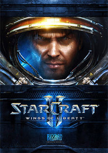

Video Games
I am a huge fan of videogames. I play a whole bunch of different ones, from the Nintendo Switch to the PC. However, my top 3 are probably Super Smash Brothers Ultimate, Stardew Valley, and Starcraft II

Each one of these games are super amazing, and for differing reasons as well. To me, there is nothing more amazing than seeing things come together with so much fore thought like a AAA video game, it's amazing to me!